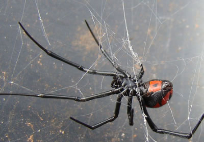

Бразильский странствующий паук
Самым ядовитым пауком в мире, по версии Книги рекордов Гиннеса, считается «Бразильский странствующий паук». Своё название этот паук получил за то, что не сидит на одном месте и не плетёт паутины, а активно перемещается в поисках пропитания. Другим крайне опасным пауком считается Чёрная вдова — которого можно встретить на Кавказе и в Крыму.

Бразильский странствующий паук (Phoneutria) — быстрый, очень активный и самое главное — ядовитый. Бразильское название животного: aranha armadeira, aranha de bananeira (аранья армадейра, аранья де бананейра) — вооруженный паук или банановый паук.
Свое говорящее название этот паук получил заслуженно: он не плетет паутины, как большинство пауков, потому что ему это не нужно. Странствующий паук никогда не живет на одном месте, а всегда бродит. Неприятно для человека то, что иногда он заходит и в дома. В Южной Америке частенько обнаруживают этих пауков в одежде или в коробках с вещами и едой.
Встречается бродячий паук только в Америке, да и то чаще всего в тропических и субтропических регионах. К бразильским бродячим паукам относят два типа — это прыгающие пауки, которые преследуют свою добычу отрывистыми прыжками, и бегающие пауки. Последние очень быстро бегают, но ведут ночной образ жизни, а днем — сидят под камнями или прячутся в каком-то другом месте, в том числе и в домах людей.
Бразильский странствующий паук любит лакомиться бананами, не упустит возможности залезть в коробку с этим фруктом. За свое пристрастие этот паук получил еще одно имя — банановый паук. Но основной пищей для него все-таки являются не фрукты. Охотится он в основном на других пауков и насекомых, а также случается, что нападает на птиц и ящериц, которые превосходят его по размерам.
Сам он довольно некрупный хищник — всего каких-то 10 см. Но маленькие размеры не мешают быть ему отличным охотником и серьезной проблемой для людей, а все от того, что он способен при укусе выделять солидную дозу токсичного яда, который образуется на концах хелицер, в каналах ядовитых желез.
Может быть, яд странствующего паука менее опасен, чем яд змей. Взрослого здорового человека он вряд ли сможет убить — только вызовет серьезную аллергическую реакцию, с которой современная медицина в состоянии быстро справиться. Но если бразильский странствующий паук укусит больного человека или маленького ребенка, то яд может подействовать быстрее, чем приедет скорая помощь. Некоторые экземпляры этого паука настолько опасны, что смерть человека может наступить в течение 20-30 минут, если не оказать немедленную помощь.
К счастью для жителей России, странствующие пауки здесь не обитают и вряд ли когда-либо появятся: климат не совсем подходящий. Но все равно надо помнить об осторожности обращения с этими членистоногими, вдруг все-таки придется встретиться с ними.
Сам по себе, странствующий паук не нападает на человека. Кусается только в целях самозащиты. Но вся проблема в том, что эти пауки любят прятаться и их очень трудно заметить. Если обнаружили странствующего паука, постарайтесь поскорее вынести его из дома и просмотреть все коробки и шкафы: нет ли в них еще одного. По возможности, надо быть максимально осторожным и ни в коем случае не брать паука в руки.
Караку?рт (от тюрк. «кара» — чёрный и «курт» — червяк, насекомое; лат. Latrodectus tredecimguttatus) или степной паук — вид ядовитых пауков из рода черных вдов.

Каракурт — паук средней величины (самка 10-20 мм, самец 4-7 мм), черный с красными точками на брюшке. Распространен в пустынной и степной зоне Средней Азии, на Кавказе, в Крыму, а также в Иране, Афганистане и по берегам Средиземного моря. Излюбленные места обитания — полынная целина, пустоши, берега арыков, склоны оврагов и т.п.
Для человека и сельскохозяйственных животных опасны только самки паука. Укусы самки могут быть смертельными для человека и таких животных, как верблюд или лошадь. Самец же, имея намного меньшие размеры, опасности для человека не представляет, так как не может прокусить довольно толстую кожу человека. Не представляет он опасности и для животных в такой степени, как самка. Наиболее ядовиты половозрелые самки. Яд каракурта не только в 15 раз сильнее яда одной из самых страшных змей — гремучей змеи, но и вообще является одним из самых ядовитых веществ, имеющих органическое происхождение, на Земле.
Частота укусов в отдельные годы резко возрастает в связи с массовым размножением каракурта. Количество пострадавших увеличивается в периоды миграции самок паука — в летние месяцы.
Яд каракурта нейротоксичен, вызывает исключительно интенсивное высвобождение ацетилхолина в нервно-мышечных синапсах, а также ацетилхолина, норадреналина, допамина и альфааминобутирата в синапсах ЦНС, а также интенсивную в симпатико-адреналовой системе.
Причиной укуса чаще всего служит придавливание паука, случайно заползшего в одежду или постель пострадавшего. В большинстве случаев укусам подвергаются спящие или отдыхающие в затененных местах люди. Преобладают поражения в сельской местности и в полевых условиях. В городах укусы каракурта крайне редки.
Каракурт чаще нападает на человека неожиданно. Особенно активен летом в ночное время. Укус малоболезненный и часто не ощущается пострадавшим. Местная реакция на яд отсутствует или весьма слабо выражена — вокруг места укуса может быть зона побледнения кожи (диаметром в несколько сантиметров), окруженная ободком слабой гипермии. В большинстве же случаев локальных изменений нет и найти место укуса крайне трудно. Иногда укус воспринимается как укол иглой. Из-за малой болезненности укуса (отличие от ужалений скорпионами, осами) многие пострадавшие, особенно укушенные в ночное время в период сна, свое внезапное возникшее заболевание не связывают с укусом ядовитого насекомого, обращаются за медицинской помощью с связи с общим проявлением интоксикации.
Общетоксические явления развиваются быстро, через 5-30 мин после укуса, и бурно прогрессируют. Тяжесть отравления варьирует от сравнительно легких, быстро преходящих форм до крайне тяжелых, иногда смертельных случаев. Для выраженных форм характерны мучительные мышечные боли, сочетающиеся с парестезиями в конечностях, пояснице, животе и грудной клетке. Больные возбуждены, часто покрыты холодным потом, выражен страх смерти, лицо напряженное, гиперемированное, склеры «налиты» кровью, мимика бедна, выражение лица страдальческое. Нередко наблюдается слезотечение. Уже вскоре после укуса развивается резкая мышечная слабость, особенно нижних конечностей, вследствие чего больные с трудом передвигаются либо вообще не могут стоять на ногах. Мучительный болевой синдром (ломящие, тянущие и рвущие боли разной локализации) сочетаются с выраженным напряжением мышц.
Мышцы брюшного пресса часто очень напряжены, что вместе с сухостью языка, парезом кишечника (ослаблена перистальтика, не отходят газы), выраженным лейкоцитозом и повышением температуры тела до 38 С и выше имитируют картину острого живота (возможны случаи ошибочного хирургического вмешательства при укусах каракурта). Могут возникнуть также тошнота и рвота. Однако правильный диагноз легко поставить при учете других симптомов. Напряжение и дисфункция мышц конечностей, спины, затылочных (запрокинутая голова, положительный синдром Кернига), их тремор и судорожные подергивания, нарушение функции дыхательной мускулатуры (саккадированное дыхание), спазм сфинктеров — узкие зрачки, задержка мочи при перерастянутом мочевом пузыре, повышение АД (токсогенная каракуртовая гипертония) — создают весьма характерную картину заболевания и позволяют поставить правильный диагноз.
В крайне тяжелых случаях возбуждение сменяется апатией, депрессией, спутанностью сознания (иногда с психотическими реакциями), коллапсом и прогрессирующей одышкой с явлениями отека легких (крепитация и влажные хрипы, пенистая мокрота).
У некоторых больных появляется розеолекая сыпь на коже. Для острой фазы интоксикации особенно характерен феномен наслоения различных по характеру и локализации болей друг на друга, сочетающийся с чувством страха, возбуждения резкой мышечной слабостью и напряжением различных групп мышц, нарушениями перистальтики и мочеотделения, повышением АД и температуры тела. При легких формах отравления болезненные явления купируются к концу первых суток, при формах средней тяжести и тяжелых — могут длиться 3-4 дня.
Сразу после укуса (но не позднее, чем через две минуты) можно прижечь укушенное место воспламеняющейся спичкой — от нагревания не успевший всосаться яд разрушается. Этот метод незаменим вдали от медицинской помощи. В остальных же случаях требуется срочная госпитализация. В противном случае укус может привести к самым плачевным результатам.
 Поделиться новостью: Рейтинг новости:
Поделиться новостью: Рейтинг новости:  (1 votes, average: 5,00 out of 5)
(1 votes, average: 5,00 out of 5) Обязательно посмотрите и эти записи:
Перепечатка любых материалов сайта без активной ссылки запрещена!
 Добро пожаловать на проект "Самые опасные животные мира" здесь вы прочитаете информацию о самом животном, сможете узнать о том, как нужно себя вести, чтобы не угодить в зубы или когти хищника, не получить смертельный удар или ядовитый укус.
Добро пожаловать на проект "Самые опасные животные мира" здесь вы прочитаете информацию о самом животном, сможете узнать о том, как нужно себя вести, чтобы не угодить в зубы или когти хищника, не получить смертельный удар или ядовитый укус.